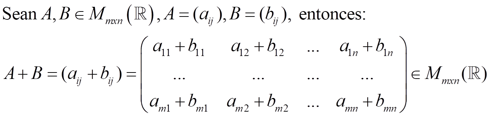
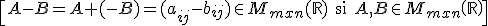
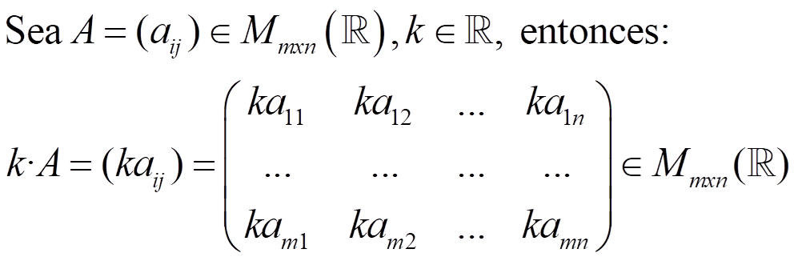
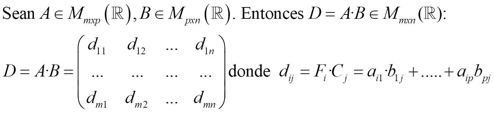
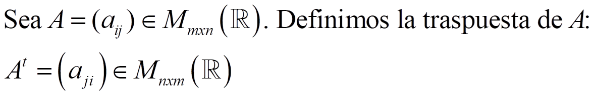

Una matriz de m filas y n columnas (mxn) es una tabla ordenada de números de la forma:
2ª columna↑ ↑ mª fila
Si la matriz tiene el mismo número de filas que de columnas, se llama matriz cuadrada
1.SUMA Y RESTA

La matriz cero es:
La matriz opuesta es

\[-A=(-{{a}_{ij}})\in {{M}_{mxn}}(\mathbb{R})\text{ si }A\in {{M}_{mxn}}\left( \mathbb{R} \right)\]
Entonces

\[A-B=A+(-B)=({{a}_{ij}}-{{b}_{ij}})\in {{M}_{mxn}}(\mathbb{R})\text{ si }A,B\in {{M}_{mxn}}\left( \mathbb{R} \right)\]
2. MULTIPLICACIÓN POR UN ESCALAR
La multiplicación por un escalar de un número real k por una matriz A se define:

3. PRODUCTO DE MATRICES

Entonces, definimos el producto de matrices

4. TRASPUESTA DE UNA MATRIZ

La diagonal (principal) de una matriz cuadrada está formada por los elementos a11, a22, …,ann. La traza es la suma de esos elementos:
\[tr(A)={{a}_{11}}+{{a}_{22}}+...+{{a}_{nn}}\in \mathbb{R}\]
La matriz identidad es:
Una matriz cuadrada se dice que es simétrica si At = A, y antisimétrica si At = -A
Una matriz
\[A\in {{M}_{n}}\left( \mathbb{R} \right)\]
es invertible si
\[\exists B\in {{M}_{n}}\left( \mathbb{R} \right)\]
tal que A·B = B·A = In . Si no lo es se llama matriz singular.
B=A-1 se denomina inversa de A
Cálculo de la inversa por el método de Gauss-Jordan
Para calcular la inversa de una matriz invertible A, tenemos que transformar la matriz (A|I) en (I|A-1) usando estas operaciones elementales:
Cambiar dos filas: Fi ↔ Fj
Sustituir una fila por una combinación lineal de todas las filas: Fi↔ k1F1+k2F2+…+kiFi+…kmFm ki ≠ 0, donde kj son números reales, j = 1, 2, ….m
NOTA: si obtenemos una fila de ceros en la matriz de la izquierda, entonces A es singular (no tienen inversa)
Una fila de una matriz, Ft, se dice que es linealmente dependiente si es combinación lineal de otras filas:
Ft = KrFr+ kr+1Fr+1+……+ksFs con
\[{{k}_{r}},{{k}_{r+1}},...,{{k}_{s}}\in \left\{ 1,...m \right\}\]
La definición para columnas es análoga.
El rango de una matriz es el número máximo de filas o columnas linealmente independientes que se pueden encontrar en la matriz
Cálculo del rango por el método de Gauss
Lo que hacemos es convertir la matriz en una escalonada y entonces el rango es el número de filas no nulas.
grafos
Un grafo es un conjunto de objetos llamados vértices, conectados entre sí por las aristas.
Si en el grafo representamos con 1 si dos vértices están conectados y con 0 si no lo están. La matriz en la que lo representamos se llama matriz de adyacencia.